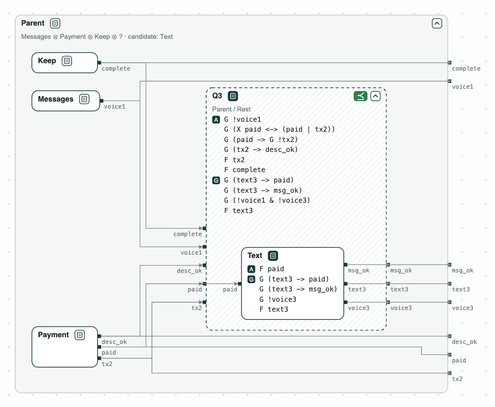

Diagrams#
CHASE draws contracts, components, and systems as a web page, with the results of the checks on the boxes. The page opens in a browser and works offline with a local copy of ELK, the layout library.


What is drawn#
A term of a specification file shows its line when the pointer rests on it.
Drag to move the diagram, and use the wheel (or a pinch) to zoom; the key 0 fits it to the window. A box keeps its row when a box is opened. The button with an arrow saves the whole diagram as SVG, PNG, or PDF.
A check that fails#
A click on a red tag opens a panel beside the diagram. The panel lists every check that fails (Problems), and for the one chosen (Details):
- the counterexample, step by step, opened at the step where a term first fails; a slider puts the values of a step on the wires, and the terms that the step breaks turn red in the boxes. When a refinement fails on the assumptions, the assumptions of the parts that the counterexample breaks are marked;
- how to fix it: the named constants of the contracts of the check, with their ranges. Find repairs gives the values at the least cost (Repair); Preview draws them on the diagram, and Apply writes them into the file. The checks that read the constant run again, and the diagram shows whether another check still fails.
The repairs run on the page served by chase-cps view FILE --serve.
Python#
from chase_cps import Component, Contract, System, refines, viz
a = Contract.from_strings(name="A", inputs=["x"], outputs=["y"],
guarantees=["G (x -> X y)"])
b = Contract.from_strings(name="B", inputs=["y"], outputs=["z"],
guarantees=["G (y -> z)"])
top = Contract.from_strings(name="Top", inputs=["x"], outputs=["y", "z"],
guarantees=["G (x -> X z)"])
s = System("S", [Component("a", a), Component("b", b)], contract=top)
s.check() # the composition against Top
q = top.divide(a, name="Q") # what the part next to a must do
refines(b, q) # the result is kept on b
d = viz.diagram(s, q, refines=[(b, q)], open=[q])
viz.save(d, "plan.html") # viz.show(d) opens a browserThe options of viz.diagram:
refineslists the pairs (R, A) where R is drawn inside A.environmentslists the environments, each with what it drives.openlists the boxes drawn open when the page loads.checkslists results of checks to draw. It is usually not needed: each check keeps its result on the contract it checks, and the diagram draws the results of the contracts that have not changed since.
In Jupyter, a system or a contract draws itself.
Command line, MCP, and VS Code#
- Command line:
chase-cps view FILEdraws a specification file, or a Verilog module. The contracts are put together by their ports: the outputs and inputs of the same name are wired, and the parts whose composition has the ports of another contract are drawn inside it; a part not written yet is drawn as a hole, the quotient. The options are listed in Command line. - MCP: the
visualizetool of the MCP server draws the same diagrams for an AI agent. - VS Code: an extension that shows the diagram beside the editor is in preparation.